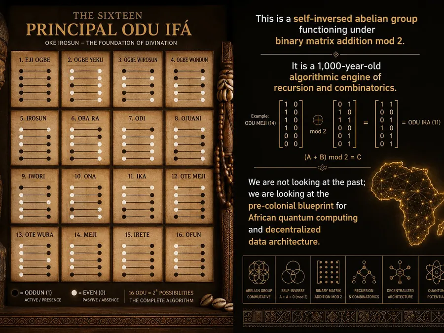

Sake Tunani Game da Afirka. Dawo da Basira. Sake Tunanin Gaba.
Dandalin yaɗa labarai da ke tafiya bisa bincike, wanda ke nazarin ci gaba, ilimi, mulki, al’adu da damarmakin Afirka ta mahangar da ta ɗora Afirka a tsakiya.

Yaya aka koya maka ka kalli Afirka?
Tambayoyi bakwai, kusan daƙiƙa casa’in. Gano wane ne naka daga cikin nau’o’i biyar na masu gina makomar Afirka, kuma ka karɓi takardar manufa kyauta.
Yi Gwajin Africa LensKyauta. Babu biyan kuɗi, har abada.
Rethinking Africa with Dr. Damola yana haɗa bincike, ƙwarewar rayuwa da muryoyin ’yan Afirka domin nazarin tsarin da ke siffanta nahiyar, da kuma neman hanyoyi na zahiri zuwa ’yancin kai, ƙwazo da sabuntawar Afirka.
Trained Away
Dalilin da ya sa ilimin Afirka yakan shirya matasa su bar damarmakin gida maimakon su inganta su, da abin da ilimin da aka tsara daga haƙiƙanin rayuwar Afirka zai yi a maimakon haka.
Afirka ba ta rasa basira ba
Ƙalubalenta shi ne yawancin basirarta ba a gane ta ba, ba a inganta ta ba, ba a kafa mata cibiyoyi ba, ba a ba ta kuɗi ba, kuma ba a mayar da ita ƙarfin gamayya yadda ya kamata ba. Wannan dandali ya wuce bayyana matsalolin Afirka: yana tambayar yadda aka haifar da su, me ke ɗorewar da su, wane ilimi aka yi watsi da shi, da waɗanne hanyoyi na zahiri za a iya ginawa. Ƙara karanta game da hangen nesa.
Wannan ba tarihin baya ba ne. Wannan kimiyya ce da aka katse.
Tukunyar laka ba alamar talauci ba ce; na’ura ce ta sanyaya ba tare da wutar lantarki ba, wadda aka inganta ta hanyar gwaje-gwajen tsararraki. Ta amfani da hotunan hasashe na fasahar AI, muna nuna yadda kimiyyar Afirka za ta kasance a yau, da ba a katse ci gabanta da ƙarfi ba.


Abin da aka katse za a iya dawo da shi. Abin da aka jinkirta za a iya sake samunsa.
Labarin da muke sake tunani a kai


Manyan jigogi shida
Ilimi & Sani
Yadda ilimi ke siffanta asali, buri, aiki da damarmakin ’yan Afirka.
Mulki & Cibiyoyi
Yadda ƙasashen Afirka za su gina tsare-tsare masu nagarta, masu ɗaukar alhaki kuma masu tushe a al’adunsu.
Ilimin Gargajiya & Ƙirƙira
Yadda ilimin gado zai zama kimiyya, kasuwanci da masana’antu na zamani.
Aiki, Samarwa & Ƙwazo
Dalilin da ya sa Afirka ke shigo da ƙwararru daga waje da yadda za a ƙarfafa ƙwarewar cikin gida.
Al’adu, Asali & ’Yancin Afirka
Yadda harshe, kafafen yaɗa labarai, addini da ikon duniya ke siffanta yadda ’yan Afirka ke kallon kansu.
Makomar Afirka
Yadda ’yan Afirka za su tsara birane, cibiyoyi, fasahohi da tattalin arziki masu tushe a haƙiƙanin rayuwarsu.
Wane ilimi iyayenku suke da shi wanda zamaninku bai gada ba?
Aika amsarkaAna wallafa zaɓaɓɓun amsoshi a shafin tare da izinin mai ba da gudunmawa.
Muryoyi da yawa, teburi ɗaya
Malamai, masu sana’a, ɗalibai, ’yan kasuwa, dattawa, masu tsara manufofi da ’yan Afirka mazauna ƙetare. Kowane wata wannan dandali yana gabatar da murya ɗaya ta Afirka da ilimin da take ɗauke da shi. Idan kai ne, ko wani da ka sani, ka sanar da mu.
Ayyukan rubutu
Maƙaloli, taƙaitattun bincike, jerin littattafan karatu da gajerun takardun saukarwa suna tare da shirye-shiryen. Wannan ne ya bambanta dandalin da sharhi kawai: kowace magana za a iya bin diddiginta zuwa tushenta.
Murya ɗaya ba za ta iya hasashen makomar Afirka ba
Kawo bincikenka, ƙwarewarka, tambayarka ko labarinka cikin tattaunawar.
Ku san Dakta Damola

Dakta Damola masaniyar tattalin arzikin ci gaba ce, malama mai ɗora Afirka a tsakiya, ƙwararriya a fannoni da dama na AI, mai tsara dabarun manufofin gwamnati kuma mawaƙiyar waƙoƙin bishara, mai ƙwarewa ta fiye da shekaru 25 a gwamnati, jami’o’i da ba da shawara na ƙasa da ƙasa. Ta hanyar Rethinking Africa tana fitar da ilimin jami’a daga wuraren da aka taƙaita zuwa tattaunawar jama’a.
Domin malamai, ɗalibai, masu tsara manufofi, ƙwararru, masu ƙirƙira, shugabannin al’umma, ’yan Afirka mazauna ƙetare, da duk wanda ya himmatu ga farfaɗo da tunani da ci gaban Afirka.
Shiga cikin Mutane 1,000 na Farko
Kasance cikin mambobi dubu na farko na wani yunƙuri na dawo da basira da ’yancin Afirka. Gano mahangar da ta ɗora Afirka a tsakiya bisa bincike, kalli tattaunawa da malamai da ƙwararru, kuma ka karɓi sababbin shirye-shirye, maƙaloli da gayyatar taruka, farawa da jerin Kwanaki 7 na Sake Tunani kyauta.
Babu saƙonnin banza. Za ka iya fita a kowane lokaci.
Taimaka wa wannan shiri ya bunƙasa
Rethinking Africa with Dr. Damola shiri ne mai zaman kansa. Tallafinka yana ɗaukar nauyin bincike, shirya shirye-shirye, fassara da adana ilimin Afirka, kuma yana sa wannan dandali ya kasance kyauta ga ɗalibai da al’ummomi a faɗin nahiyar.
Gudunmawa tana tallafa wa shirin ilimi mai zaman kansa, kuma ba gudunmawar sadaka ba ce da ake cirewa daga haraji. Ana wallafa taƙaitaccen bayanin yadda ake amfani da kuɗaɗen kowace shekara a wannan shafin.
Yi haɗin gwiwa da Rethinking Africa
Ana gayyatar jami’o’i, cibiyoyin bincike, cibiyoyin al’adu, kafafen yaɗa labarai da hukumomin ci gaba don haɗa kai a ayyukan bincike, yaɗa labarai da cuɗanya da jama’a.
Fara tattaunawa